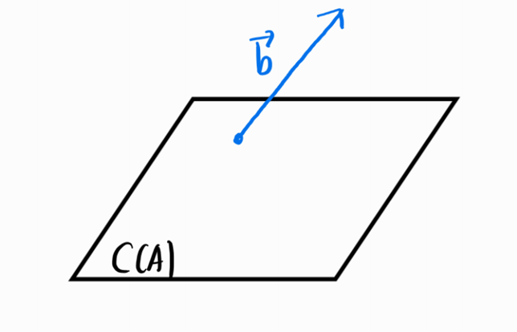
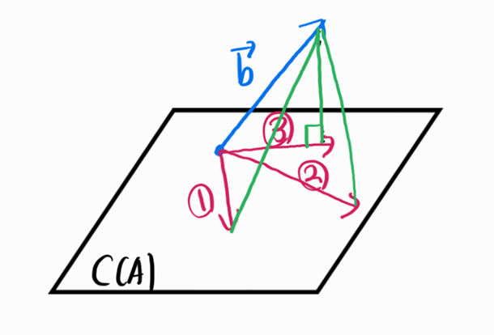

Problem Setting
\(A \in \mathbb{R}^{m \times n},\text{rank}(A) = n<m,x \in \mathbb{R}^{n \times 1},b \in \mathbb{R}^{m \times 1}\) 가 주어지고 방정식 \(Ax = b\)를 만족하는 해인 \(x\)를 구할 수 없을 때, \(Ax\)가 \(b\)와 가장 비슷하게 하는 \(x\)를 찾는 것이 목적입니다.
Least Squares
주어진 문제상황을 보면 \(A\)가 full column rank이면서 해를 구할 수 없는 상황 즉, \(b \notin \text{C}(A)\)인 아래와 같은 상황입니다.

최소제곱법(Least Squares)은 위와같이 full column rank인 \(A\)가 주어진 \(Ax = b\)인 연립방정식에서 \(b \not \in C(A)\) 때문에 해를 구할 수 없는 상황에서 사용합니다. 최소제곱법은 \(b\)와 가장 비슷한 \(\hat{b}\in C(A)\)를 구하고 그때의 조건으로 방정식 \(A\hat{x} = \hat{b}\)를 풀어서 근사적으로 해\(\hat{x}\)을 구합니다.

그렇다면 먼저 \(C(A)\)의 벡터 중에서 \(b\)와 가장 비슷한 벡터 \(\hat{b}\)를 찾는 것입니다. 위의 그림에 있는 빨강색 벡터들 중 어떤 벡터가 가장 \(b\)와 비슷할까요? 벡터는 공간상에서 점(화살표의 종점)로 해석할 수 있고 점과 점이 비슷하다는 것은 두 점사이의 거리가 가깝다는 것을 의미합니다. 그러므로 두 벡터가 가장 비슷하다 => 두 점이 가장 비슷하다 => 점과 점 사이의 거리가 가장 가깝다 이므로 두 벡터(점)사이의 거리를 가장 가깝게 좁히는 벡터가 바로 \(\hat{b}\)입니다.
여기서 만약 \(e = b-Ax\)로 정의하면 두 점사이의 거리는 \(||e||_2\)(L2-norm)이 됩니다. L2-norm은 루트가 붙어있어서 계산하기가 불편하므로 제곱을 해서 루트를 없애주면 \(e\)의 원소들의 제곱(squares)이 되는데 이를 최소화하는 \(x\)를 찾는 방법이므로 least squares라고 한다고 합니다. 이런식으로 \(e\)를 직접 구해서 하는 방법도 있지만 여기서는 다른방식으로 구합니다.(내적!)
본론으로 돌아와서 …두 벡터(점)사이의 거리를 가장 가깝게 좁히는 벡터가 \(\hat{b}\)라 했습니다.언제 두 벡터(점)사이의 거리가 가장 좁혀질까요? \(Ax\)를 \(C(A)\)에서 이리저리 움직이다 보면 두 벡터사이의 거리가 가장 가까울 때에는 두 벡터 \(b-\hat{b}\) 와 \(\hat{b}\)가 수직임을 알 수 있습니다. 그러므로 \(\hat{b}\)에 관해서 내적 = 0 조건을 얻을 수 있고 다음과 같습니다.

조건과 방정식을 \(A\hat{x} = \hat{b}\)을 연립하면 다음과 같습니다.
원하는건 \(\hat{x} = \bf 0\)가 아닙니다. 괄호안의 값이 \(\bf 0\)이 되어야 하는 것이므로 계속 전개하면 …
여기서 \(A^TA \in \mathbb{R}^{m \times m}\)이고 \(\text{rank}(A^TA) = rank(A) = m\)인 full rank이므로 역행렬이 존재합니다.근사적으로 구한 방정식의 해는 다음과 같습니다.
\[\therefore \hat{x} = (A^TA)^{-1}A^Tb\]
projection matrix
위해서 구한 \(\hat{x}\)를 \(A\hat{x}\)에 대입하면 다음과 같습니다.
\[A\hat{x} = (A^TA)^{-1}A^Tb\]
위 식은 우변의 \(b\)에 \(A(A^TA)^{-1}A^T\)를 곱하여 \(C(A)\)에서 \(b\)와 가장 비슷하면서(거리가 가장 가까우면서) \(b\)를 \(C(A)\)에 정사영(projection) 한 벡터 \(A\hat{x}\)을 얻음을 의미합니다. 따라서 \(A(A^TA)^{-1}A^T\)를 projection matrix라 부르고 \(p_A\)로 표기합니다.
정리
Least squares는 full column rank인 \(A\)가 주어져 \(Ax = b\)인 방정식을 풀지 못할 때, 방정식의 해를 근사적으로 구하는 방법입니다. \(b\)대신 가장가까운 \(\hat{b}\)으로 \(A\hat{x} = \hat{b}\)를 풀어 근사적으로 해(\(\hat{x}\))를 구합니다. 이때 \(b\)와 가장 가까운 벡터\(\hat{b}\)는 \(b\)를 \(C(A)\)에 정사영(projection)이므로 여기서 생기는 내적 = 0이라는 수직조건도 같이 연립하여 풉니다.